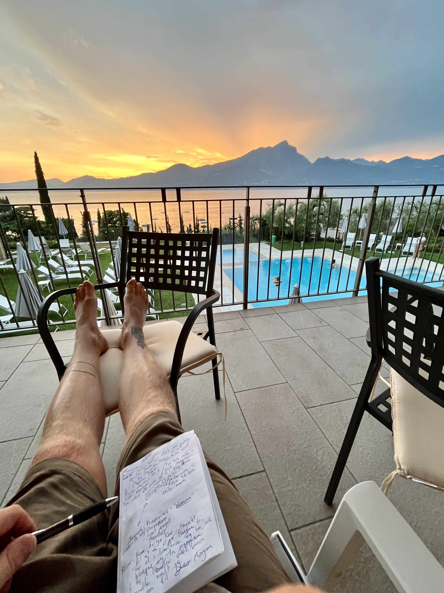
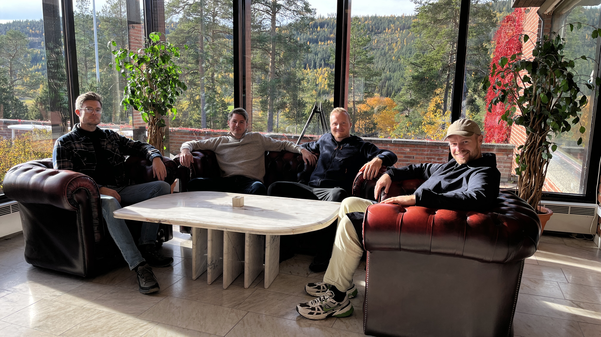

Du har spart opp til ferien i et helt år. Du har pakket, reist, kommet frem. Du ligger på stranden, eller på hytta, eller på et hotell med utsikt til en solnedgang folk betaler tusenvis for.
Og hvor er hodet ditt?
For de fleste er svaret alle andre steder. På e-poster som venter. På noe som ble sagt rett før avreise. På bekymringen som pakket seg selv ned i kofferten og ble med. Vi tar ferie fra jobben, men nesten aldri fra hodet.
Denne artikkelen handler om hvorfor det skjer, hva det koster deg, og hvorfor meditasjon kanskje er det viktigste du kan pakke i kofferten i sommer.

Ferie er ikke nødvendigvis en pause for hjernen
Mennesker har en lei tendens til å tro at en pause fra jobben er automatisk den ultimate pausen for hjernen. Det er ikke sant.
Matthew Killingsworth ved Harvard1 samlet inn rundt 250 000 målinger fra folk midt i hverdagen, via en app som pinget dem på tilfeldige tidspunkt og spurte hva de gjorde, og hvor tankene deres var.
Han fant at folk tenkte på noe annet enn det de gjorde i 46,9 prosent av tiden. Med andre ord lever vi store deler av livet med hodet et helt annet sted enn kroppen.
Men det aller viktigste funnet var dette: hvor til stede du er, betyr mer enn dobbelt så mye for lykken din som hva du faktisk gjør. I studien forklarte selve aktiviteten bare 4,6 prosent av svingningene i hvor lykkelige folk var fra øyeblikk til øyeblikk. Hvor til stede de var, forklarte 10,8 prosent. Altså mer enn dobbelt så mye.
Det betyr noe ubehagelig konkret. En ferie der hodet er et annet sted, er i praksis bortkastet. Kroppen var på stranden. Resten av deg var et helt annet sted.
Det viktigste er ikke hva du gjør. Det er at du er til stede.
Dette er kjernen i alt jeg lærer bort, og ferie er det aller tydeligste eksempelet jeg vet om.
Du kan ikke kjøpe deg til tilstedeværelse. Du kan ikke reise langt nok til å rømme fra et fraværende sinn, for hodet ditt blir med uansett hvor du drar. Den eneste måten å faktisk være på ferie på, er å trene opp evnen til å være til stede.
Det er nøyaktig det meditasjon gjør.
Meditasjon får ferien til å vare ti ganger lenger
Her kommer det mest overbevisende funnet jeg vet om for akkurat dette.
Georg Blasche og kolleger ved Universitetet i Groningen2 sammenlignet i 2021 meditasjon med vanlig ferie. 120 deltakere ble delt i grupper og fulgt i 20 uker.
Etter ti dager hadde alle det bedre. Det er ikke rart, hvile virker for absolutt alle.
Men så ventet forskerne i ti uker. Og da hadde noe interessant skjedd. Bare de som hadde meditert, satt fortsatt igjen med gevinsten. De som bare hadde tatt en vanlig ferie, var tilbake til akkurat slik de hadde det før. Som om ferien aldri hadde funnet sted.
De hadde like lang ferie og samme vakre sted. Det eneste som skilte gruppene, var meditasjon.
Tenk på en vanlig ferie som godteri. Det smaker fantastisk der og da, og så er det borte. En ferie med meditasjon er noe kroppen din faktisk lærer og husker, lenge etter at du har låst opp ytterdøra hjemme igjen.
Hvorfor virker det sånn?
Når du mediterer, trener du nervesystemet til å gå fra gasspedal til brems. Fra det sympatiske «kjemp eller flykt» til det parasympatiske «hvil og fordøy».
En vanlig ferie gir kroppen en sjanse til å bremse. Men idet du kommer hjem og hverdagen treffer deg i full fart, tråkker du rett på gassen igjen. Du trente aldri bremsen. Du tok bare foten av gassen en liten stund.
Meditasjon trener selve bremsen, og den ferdigheten blir med deg hjem. Det er derfor roen blir værende lenge etter at du er hjemme igjen.
Ferie er det perfekte tidspunktet å begynne
De fleste sier de ikke har tid til å meditere. På ferie forsvinner den unnskyldningen fullstendig.
Du har færre forpliktelser, roligere morgener og mer tid alene enn ellers i året. Det er det ideelle vinduet for å bygge en vane som varer. Forskning viser at åtte uker med jevn praksis endrer hvordan hjernen håndterer stress,3 og ferien er en gyllen måte å få de første ukene til å sitte.
Slik gjør du det:
- Sett av tjue minutter til deg selv. Det kan være om morgenen før de andre står opp, eller midt på dagen mens du soler deg på stranda. Si fra til de rundt deg at du ikke vil bli forstyrret en liten stund.
- Sitt eller ligg et rolig sted, gjerne ute.
- Følg pusten. Når tankene vandrer, og det gjør de garantert, kom rolig tilbake.
- Det er alt. Tjue minutter, hver dag i ferien.
Vil du prøve med en gang? Her er fem minutter.
En kort, guidet meditasjon jeg har spilt inn. Sett deg ned, trykk play, og se hva som skjer.
Når du kommer hjem, har du allerede halve veien til en varig vane bak deg.
Andre måter å være til stede på ferie
Meditasjon er den beste treningen, men tilstedeværelse kan øves hele dagen.
Legg vekk mobilen. Dette er det enkleste og mektigste grepet du har. Mobilen er den fremste tyven av tilstedeværelse vi mennesker har funnet opp. Hver eneste gang du sjekker den, river du deg selv ut av øyeblikket du nettopp var i.
Selv bruker jeg en Apple Watch med simkort. Da kan jeg la mobilen ligge igjen på hotellrommet og gå tur helt uten den, samtidig som min kone når meg hvis det skulle være noe. Jeg er utilgjengelig for hele verden, men tilgjengelig for de viktigste. Det har forandret hvordan feriene mine kjennes.
Naturopplevelser uten skjerm er rene magien. Forskning på «skogsbading» (det japanske shinrin-yoku) viser at en tur i naturen uten avbrytelser senker både kortisol og blodtrykk målbart.4 En fjelltur eller en strandtur uten mobil er en meditasjon i seg selv.
Spis ett måltid i full stillhet. Bare kjenn smaken, teksturen, lukten. Ikke skru på TV-en, ikke dra frem mobilen. Du kommer til å bli sjokkert over hvor mye av maten din du vanligvis svelger uten å merke.
Fravær av ytre stimuli. Sett deg ned og gjør ingenting. Du trenger ikke fylle stillheten med en podkast eller en spilleliste. Bare se utover. Hjernen din trenger den pausen langt mer enn den trenger enda en episode.
Et retreat er ferien som faktisk hviler deg
Hvis du vil ta dette ett steg videre, finnes det en ferieform som er bygget rundt nettopp tilstedeværelse. Det kalles et retreat.

Et meditasjonsretreat er noen dager der alt er lagt til rette for at nervesystemet ditt skal roe seg helt ned. Stillhet, enkel rutine, guidet meditasjon, og null skjermer som river deg ut av øyeblikket. Allerede tre dager kan dempe stressmønstre i hjernen, og en uke gir målbare endringer i både hjerne og immunforsvar.5
Det er den mest intense formen for det jeg har skrevet om her. En ferie som hviler deg dypere enn den vanlige, rett og slett fordi den trener selve evnen til å være til stede.
Vær der du er
Jeg har to mål med arbeidet mitt. At flere skal være til stede i det de faktisk gjør, fordi det er det som gjør oss lykkelige. Og at flere skal meditere, fordi det er den beste veien jeg kjenner dit.
Ferie er øyeblikket der alt dette blir aller tydeligst. Du har gjort alt riktig. Du har skaffet deg tiden, stedet og roen. Det eneste som mangler, er at du faktisk er der.
Så ta med deg tjue minutter meditasjon hver dag i sommer. La mobilen ligge. Vær der du er.
Det er den beste ferien du kan gi deg selv.